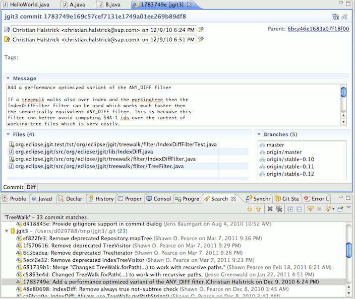
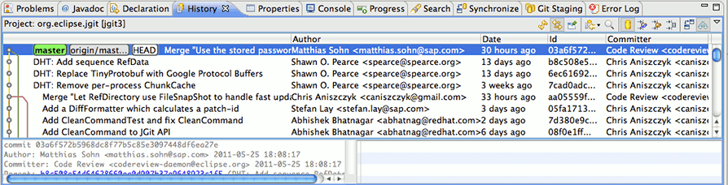
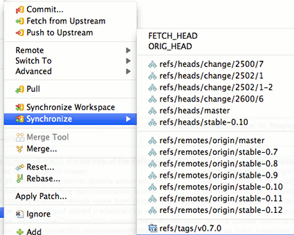
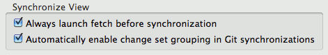
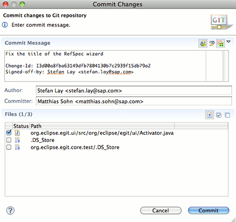
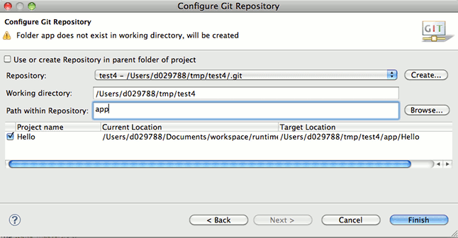
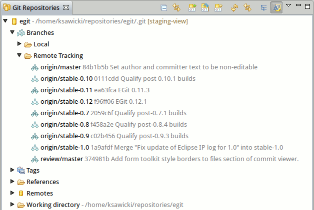
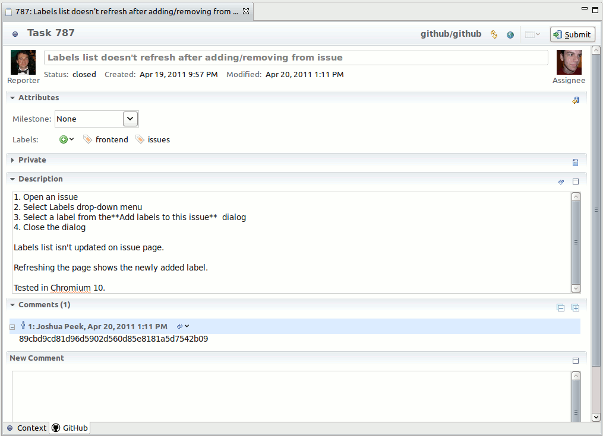
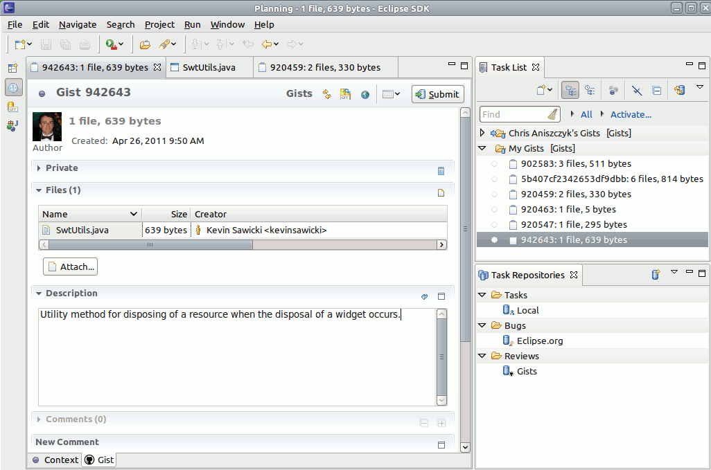

| EGit 1.0 New and Noteworthy |
|
|

|
|
|
Bugs Closed |
Features
Git Commit Search and Commit Viewer
-
Search > Search... > Git Search opens the new Git commit search wizard

- Double clicking a commit in the search result opens the new Commit Viewer

Staging View
- The new Staging View shows the "git status" for the selected repository.
- Drag and drop files you want to stage and use commit to commit the staged changes.
- Double clicking a file opens a Compare View showing the diff which isn't yet staged / is staged already.

Blame Annotations
EGit now supports displaying
blame annotations in the editor showing commit and author information for each line in a file.

- Compare index with HEAD
- Replace with HEAD, commit and ref
- commit action in Synchronize View
Usability improvements
History View
- improved graph rendering
- support for relative dates

Synchronize View
- improved menus and synchronize wizard

- auto-fetching changes before synchronize

Commit

- commit viewer with notes support

- non-modal commit from staging view
Improved Share Project Wizard
- The improved Share Project Wizard allows to relocate a new project which has been created in the Eclipse workspace under an already existing or newly created git repository.

Git Repositories view
Branch commits
The latest commit on branches and tags can now be displayed in the Git Repositories view by selecting the changeset icon on the toolbar.

GitHub Connector
Issues
GitHub issues can be added as a Mylyn Task repository and can appear under queries in the Task List view.

Issues can be created, edited, and commented on using the task editor.

Gists
GitHub
gists can be added as a Mylyn Task Repository and can appear under queries in the Task List view. Gists can be edited and commented on using the task editor.

Gists can also be created from the GitHub menu when selecting files or from text selections in the editors.
|
|
|
|
|
Bugs Closed |